Capítulo 3 Análisis de datos exploratorio
Paquetes para este capítulo
if (!require('cowplot')) install.packages('cowplot'); library('cowplot')
if (!require('dplyr')) install.packages('dplyr'); library('dplyr')
if (!require('gapminder')) install.packages('gapminder'); library('gapminder')
if (!require('ggplot2')) install.packages('ggplot2'); library('ggplot2')
if (!require('ggridges')) install.packages('ggridges'); library('ggridges')
if (!require('haven')) install.packages('haven'); library('haven')
if (!require('inspectdf')) install.packages('inspectdf'); library('inspectdf')
if (!require('tidyr')) install.packages('tidyr'); library('tidyr')En este capítulo vamos a aplicar lo que hemos aprendido en los dos capítulos anteriores, combinando transformación de datos con visualización para entender nuestras bases de datos, buscar patrones interesantes, etc. Podéis encontrar una introducción más completa en el manual R 4 data science - exploratory data analysis.
3.1 Visualizando distribuciones
Para visualizar la distribución de nuestras variables, tendremos que seguir estrategias diferentes dependiendo de si se trata de variables categóricas o continuas.
3.1.1 Variables categóricas
ggplot(gapminder, aes(continent)) +
geom_bar()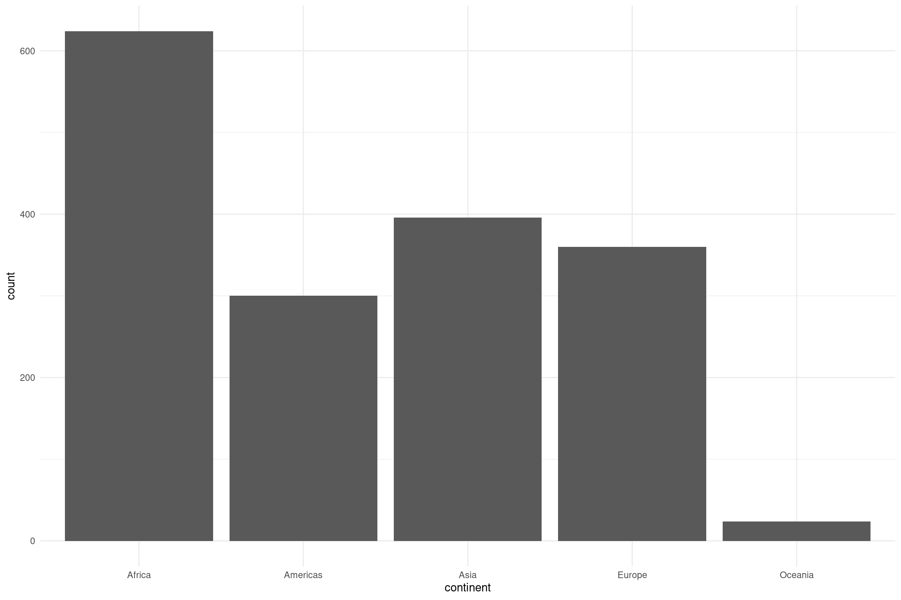
gapminder %>%
count(continent)## # A tibble: 5 × 2
## continent n
## <fct> <int>
## 1 Africa 624
## 2 Americas 300
## 3 Asia 396
## 4 Europe 360
## 5 Oceania 243.1.2 Variables continuas
ggplot(gapminder, aes(lifeExp)) +
geom_histogram(binwidth = 1)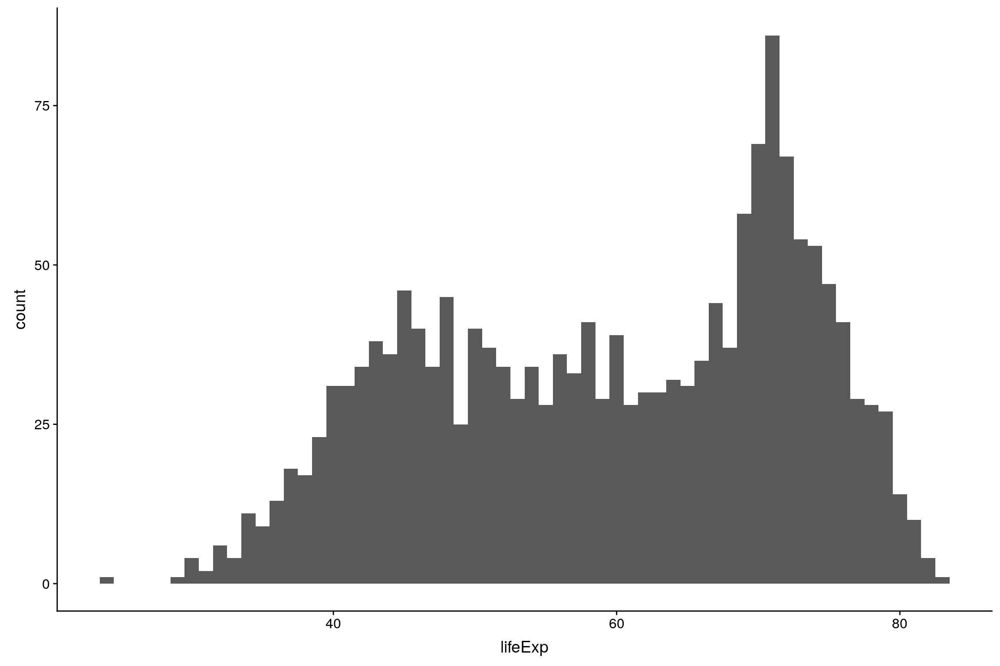
gapminder %>%
summarise(MEAN = mean(lifeExp),
MEDIAN = median(lifeExp),
SD = sd(lifeExp),
MAX = max(lifeExp),
MIN = min(lifeExp))## # A tibble: 1 × 5
## MEAN MEDIAN SD MAX MIN
## <dbl> <dbl> <dbl> <dbl> <dbl>
## 1 59.5 60.7 12.9 82.6 23.6Ejercicios
¿Podrías replicar la visualización de abajo? Queremos mostrar un histograma por continente.
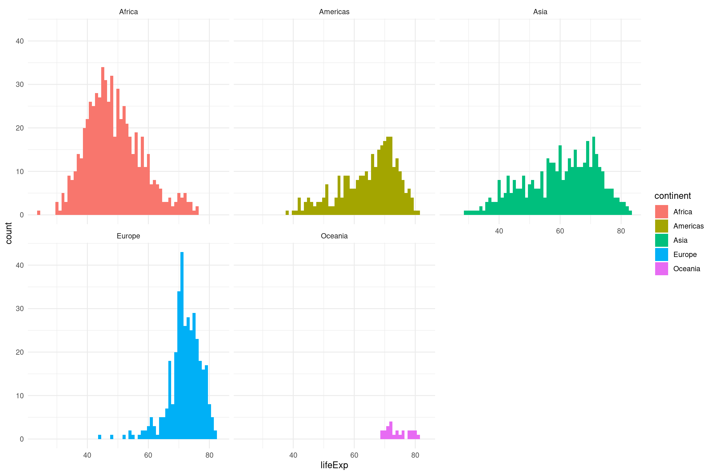
¿Como podemos añadir el histograma general para poder entender donde se ubica cada continente?
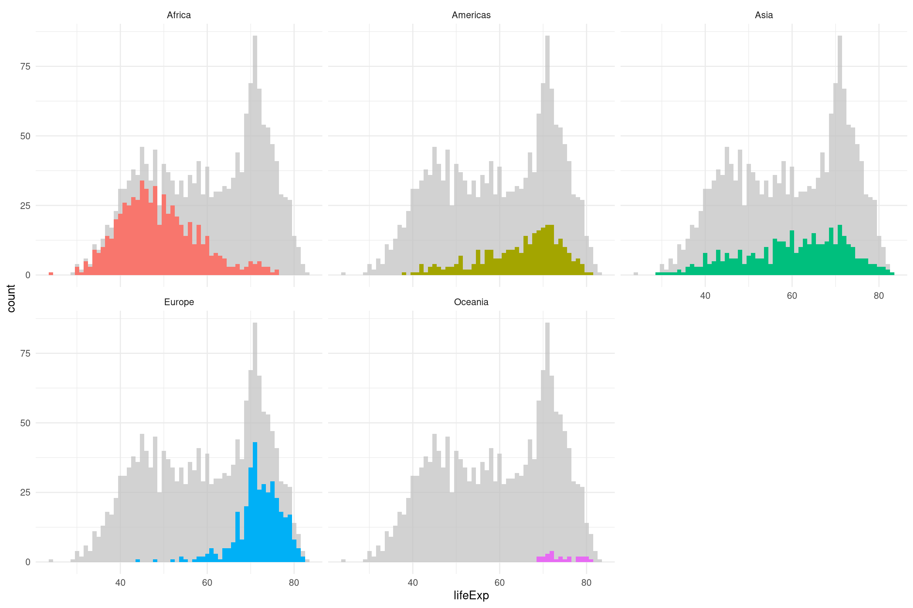
También queremos ver los descriptivos por continente, ordenados por el promedio:
## # A tibble: 5 × 6
## continent MEAN MEDIAN SD MAX MIN
## <fct> <dbl> <dbl> <dbl> <dbl> <dbl>
## 1 Africa 48.9 47.8 9.15 76.4 23.6
## 2 Asia 60.1 61.8 11.9 82.6 28.8
## 3 Americas 64.7 67.0 9.35 80.7 37.6
## 4 Europe 71.9 72.2 5.43 81.8 43.6
## 5 Oceania 74.3 73.7 3.80 81.2 69.1Ejercicio variables individuales
Usando el DF mpg, visualiza la distribucion de las variables manufacturer, class, trans, hwy y cty
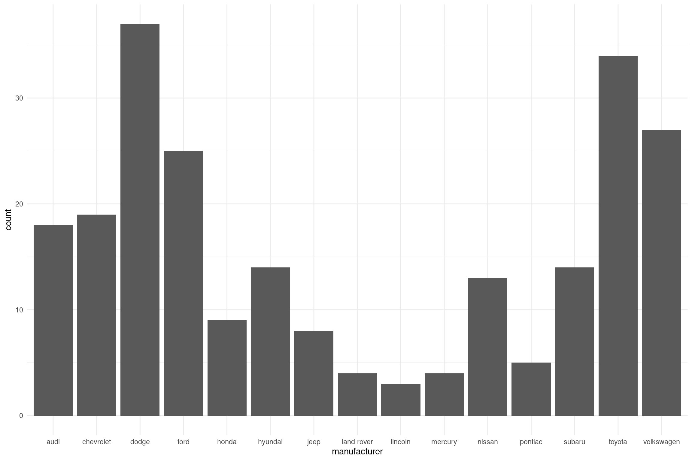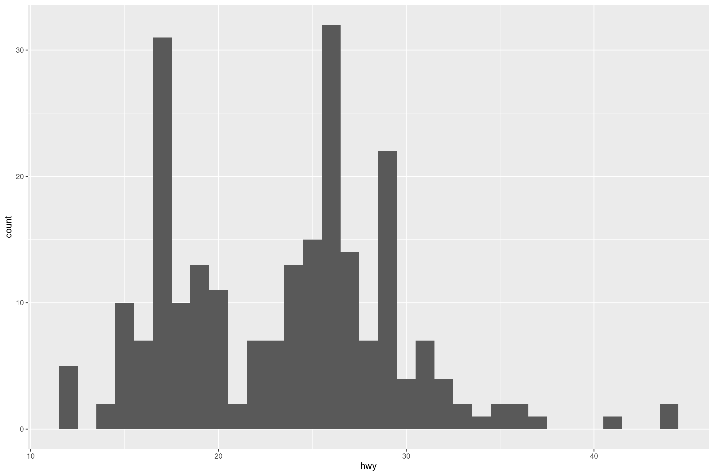
3.1.3 Visualizando datasets completos
Cuando nos llega una nueva base de datos, una de las primeras cosas que haremos será familiarizarnos con los datos. Cómo se distribuyen, cual es la relación entre distintas variables, etc.
# Wide to long
d <- gapminder %>%
pivot_longer(everything(), values_transform = list(value = as.character)) %>%
filter(value != 999) %>% # Si existiera algun codigo para missing values, filtrar
mutate(value_NUM = as.numeric(value))
# Plot numeric variables
d %>%
drop_na(value_NUM) %>%
ggplot(aes(value_NUM)) +
facet_wrap(~ name, scales = "free") +
geom_histogram(bins = 15) #+ scale_x_log10()
# Plot non-numeric variables
d %>%
drop_na(value) %>%
filter(is.na(value_NUM)) %>%
ggplot(aes(value)) +
facet_wrap(~ name, scales = "free") +
geom_bar() +
coord_flip()
3.1.3.1 inspectdf
gapminder %>% inspectdf::inspect_na()## # A tibble: 6 × 3
## col_name cnt pcnt
## <chr> <int> <dbl>
## 1 country 0 0
## 2 continent 0 0
## 3 year 0 0
## 4 lifeExp 0 0
## 5 pop 0 0
## 6 gdpPercap 0 0gapminder %>% inspectdf::inspect_na() %>% show_plot + coord_flip()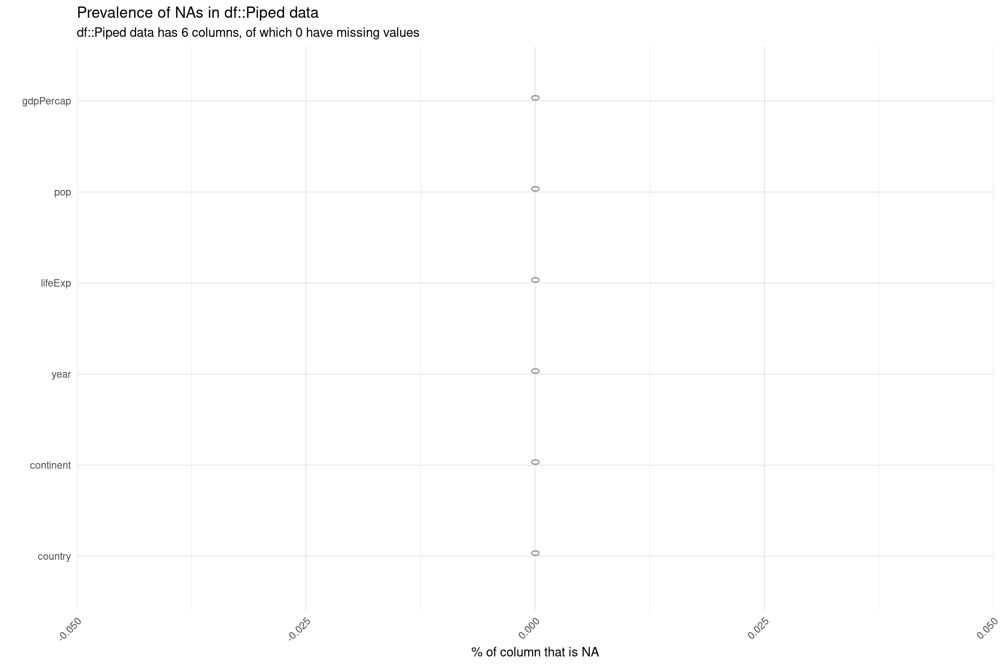
gapminder_cat <- gapminder %>% inspectdf::inspect_cat()
gapminder_cat %>% inspectdf::show_plot()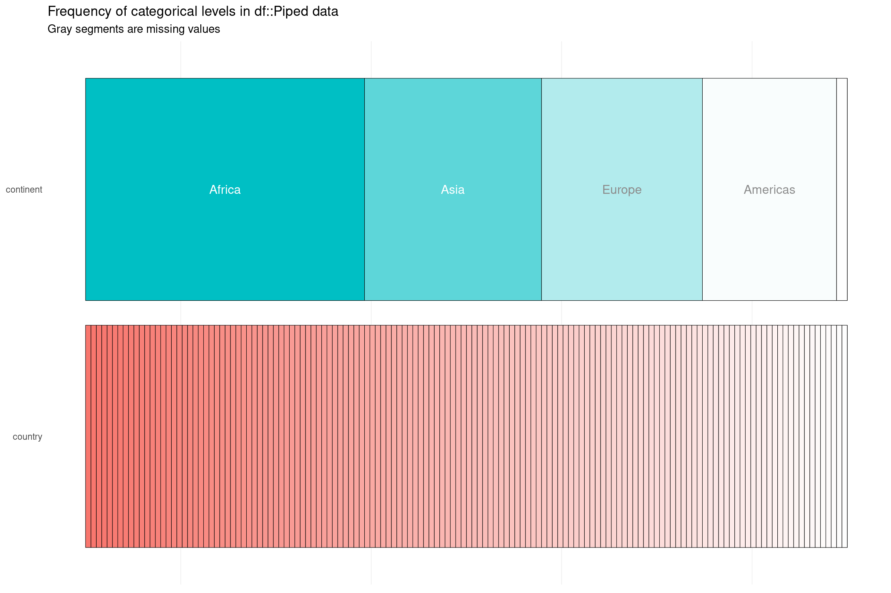
gapminder_num <- gapminder %>% inspectdf::inspect_num()
gapminder_num %>% inspectdf::show_plot()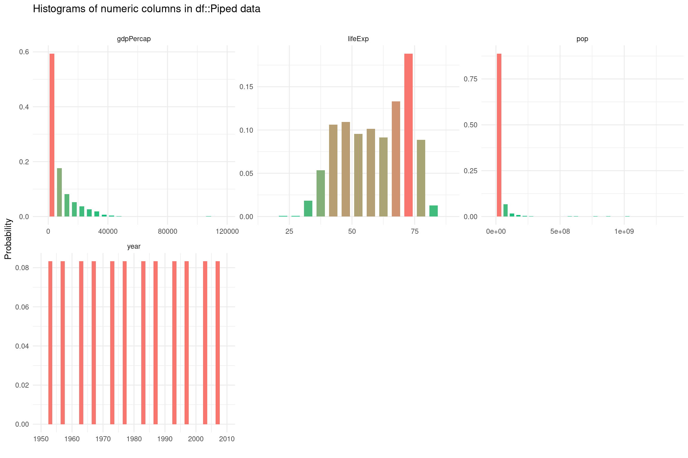
3.2 Covariación
3.2.1 Variable categórica y continua
Podemos contar el numero de elementos por nivel de la variable o ver densidad, etc.
ggplot(gapminder, aes(lifeExp, colour = continent)) +
geom_freqpoly(binwidth = 2)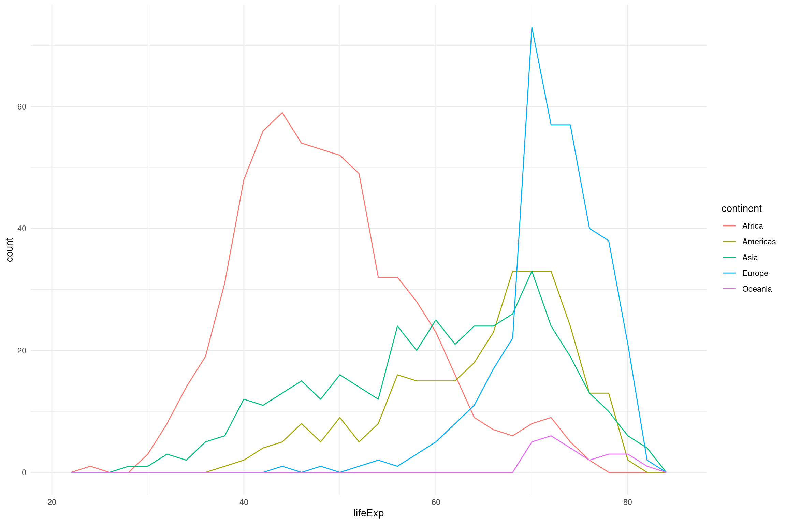
Podemos usar geom_density_ridges() para combinar puntos con distribuciones:
ggplot(gapminder, aes(lifeExp, continent, fill = continent)) +
ggridges::geom_density_ridges(stat = "binline", bins = 20, scale = 0.95, draw_baseline = FALSE, alpha = .3) +
ggridges::geom_density_ridges(jittered_points = TRUE, position = "raincloud", alpha = 0.5, scale = 0.9)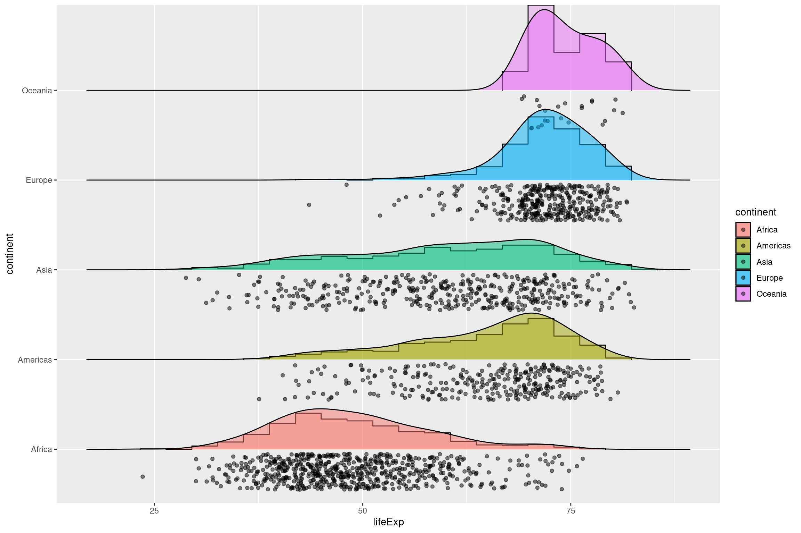
¿Qué estamos viendo exáctamente arriba? Hay un punto por cada pais, y por cada año, lo que da lugar aalgo bien dificil de interpretar. Podemos ver los datos únicamente del último año:
gapminder %>% group_by(year) %>% summarise(n())## # A tibble: 12 × 2
## year `n()`
## <int> <int>
## 1 1952 142
## 2 1957 142
## 3 1962 142
## 4 1967 142
## 5 1972 142
## 6 1977 142
## 7 1982 142
## 8 1987 142
## 9 1992 142
## 10 1997 142
## 11 2002 142
## 12 2007 142ggplot(gapminder %>% filter(year > 1995), aes(lifeExp, continent, fill = continent)) +
ggridges::geom_density_ridges(stat = "binline", bins = 20, scale = 0.95, draw_baseline = FALSE, alpha = .3) +
ggridges::geom_density_ridges(jittered_points = TRUE, position = "raincloud", alpha = 0.5, scale = 0.9)
3.2.2 Ejercicio
¿Podríais mostrar la diferencia entre los extremos en la base de datos, 1952 y 2007?:
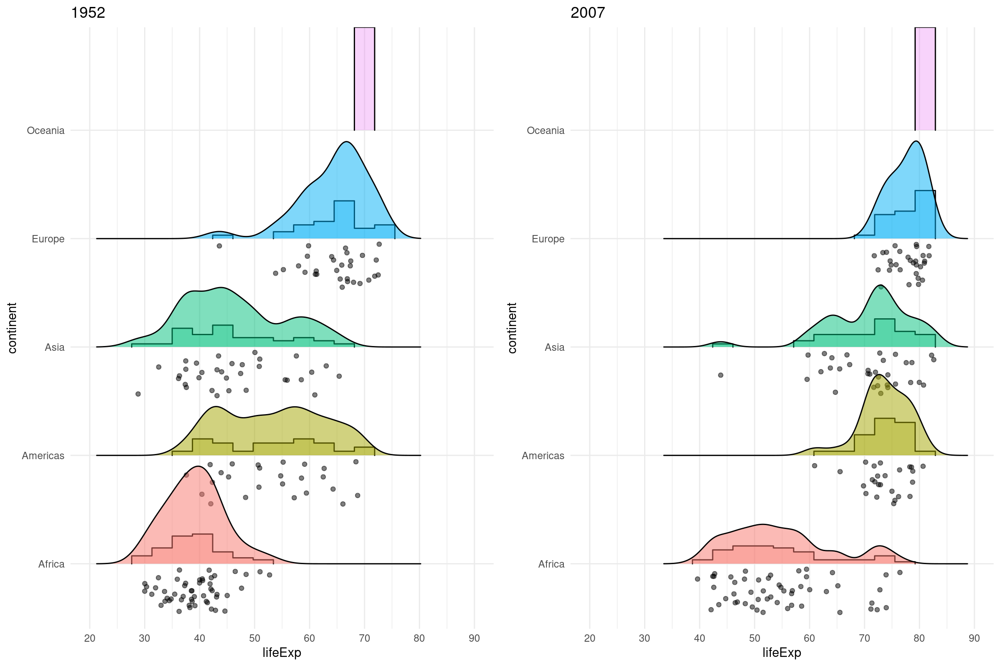
Mira el plot donde mostramos la diferencia entre los extremos en la base de datos, 1952 y 2007 con dos gráficas, una al lado de la otra. ¿Ves algún problema?
Trata de resolver el problema en las escalas. El resultado final debería ser:
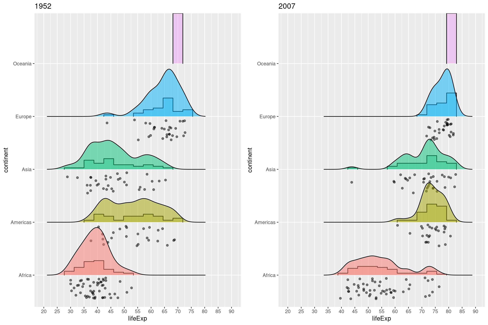
Podemos hacer algo que clarifica mucho las cosas. Como visualizar ver el avance por país de una manera más directa:
# Cálculo
DF_gapminder_max_min = gapminder %>%
group_by(continent, country) %>%
summarise(lifeExp = max(lifeExp) - min(lifeExp))
ggplot(DF_gapminder_max_min, aes(lifeExp, continent, fill = continent)) +
ggridges::geom_density_ridges(stat = "binline", bins = 20, scale = 0.95, draw_baseline = FALSE, alpha = .3) +
ggridges::geom_density_ridges(jittered_points = TRUE, position = "raincloud", alpha = 0.5, scale = 0.9) +
theme(legend.position = "none") +
ggtitle("Diferencia entre max y min por país")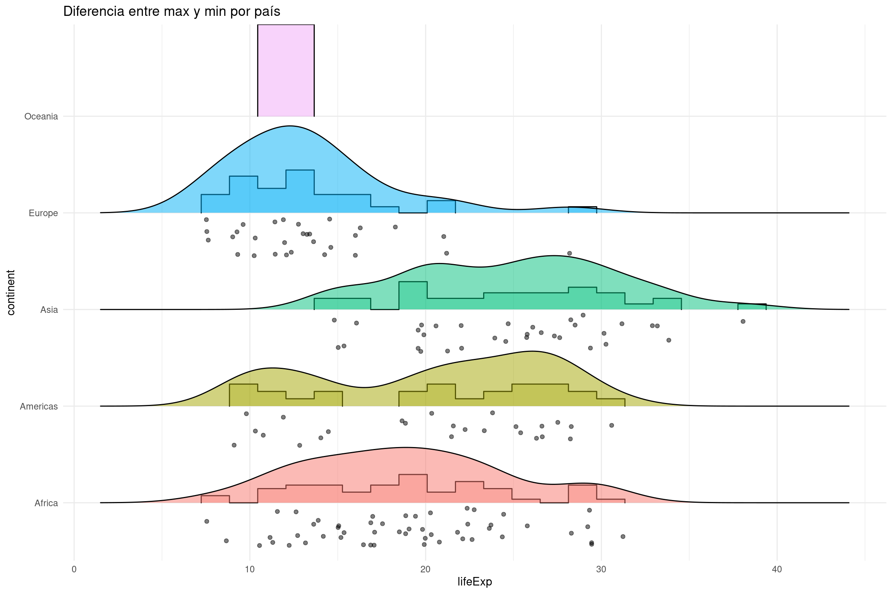
3.2.3 Ejercicio
Arriba estamos asumiendo que el valor máximo de esperanza de vida corresponde al más actualizado, pero probablemente no sea así. ¿Podrías rehacer el cálculo para mostrar la diferencia entre 1952 y 2007?
Pista 
1. Crear un DF para cada año, renombrando la variable lifeExp2. Usando la funcion
full_join(), juntamos ambas bases (tendras que usar el parametro by). 3. Con
mutate() calculamos la diferencia.

3.2.4 Dos variables categóricas
ggplot(diamonds, aes(cut, color)) +
geom_count()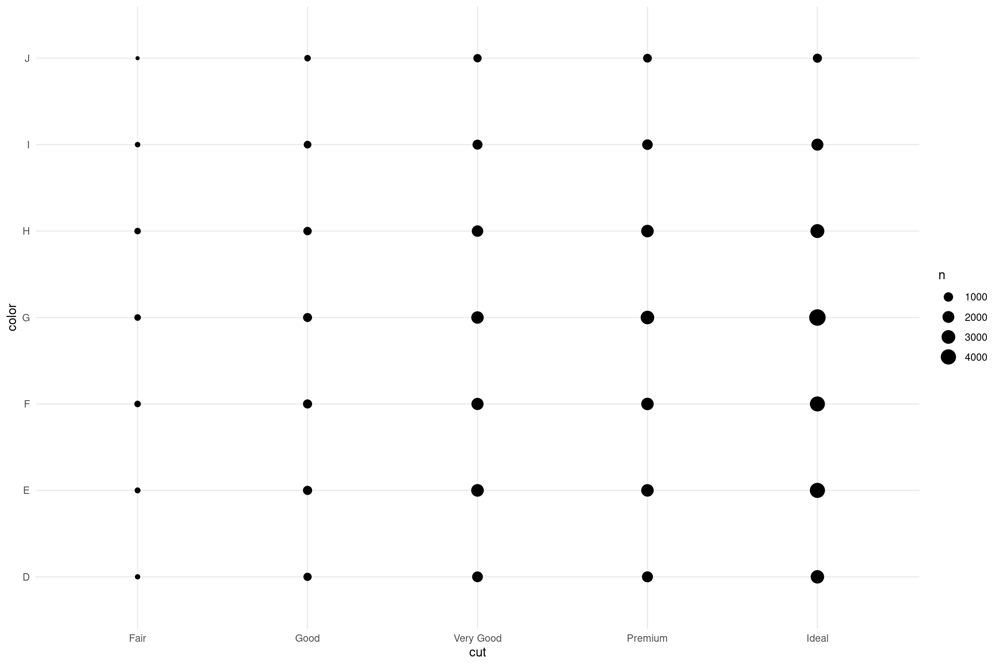
diamonds %>%
count(color, cut)## # A tibble: 35 × 3
## color cut n
## <ord> <ord> <int>
## 1 D Fair 163
## 2 D Good 662
## 3 D Very Good 1513
## 4 D Premium 1603
## 5 D Ideal 2834
## 6 E Fair 224
## 7 E Good 933
## 8 E Very Good 2400
## 9 E Premium 2337
## 10 E Ideal 3903
## # … with 25 more rowsdiamonds %>%
count(color, cut) %>%
ggplot(aes(color, cut, fill = n)) +
geom_tile()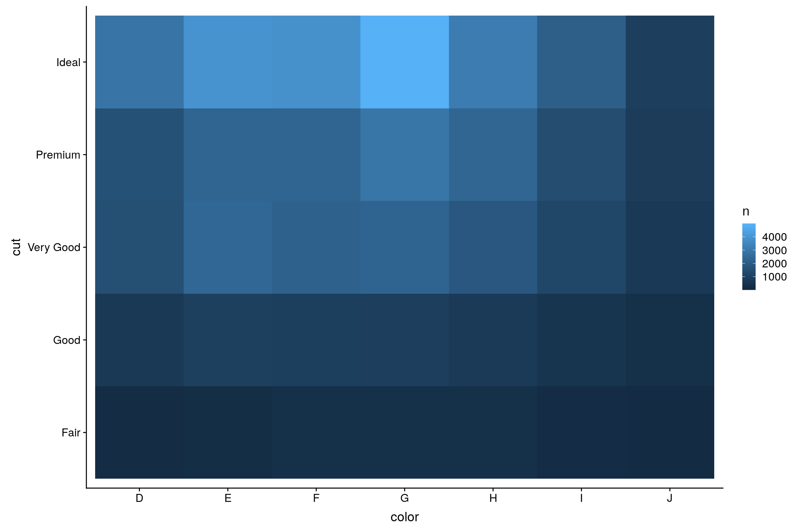
3.2.5 Dos variables continuas
ggplot(gapminder, aes(lifeExp, gdpPercap)) +
geom_point()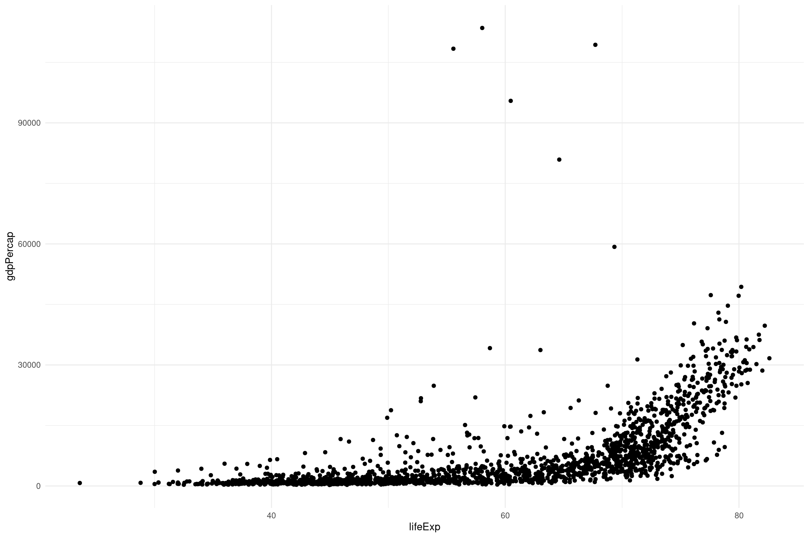
ggplot(gapminder, aes(lifeExp, gdpPercap, color = continent)) +
geom_point(alpha = 1 / 2) +
scale_y_log10()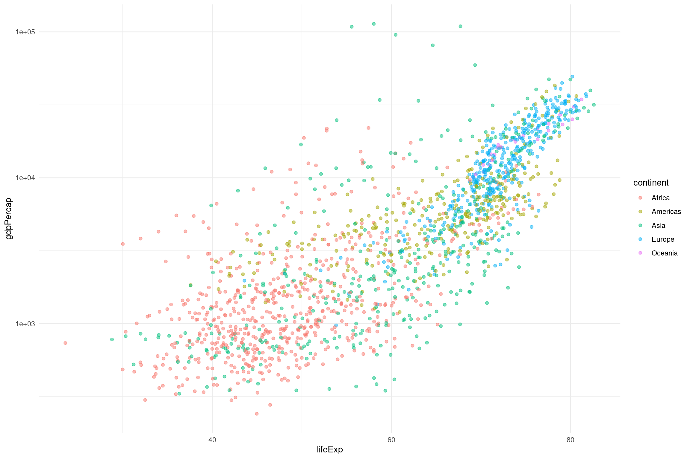
ggplot(gapminder, aes(lifeExp, gdpPercap)) +
geom_hex()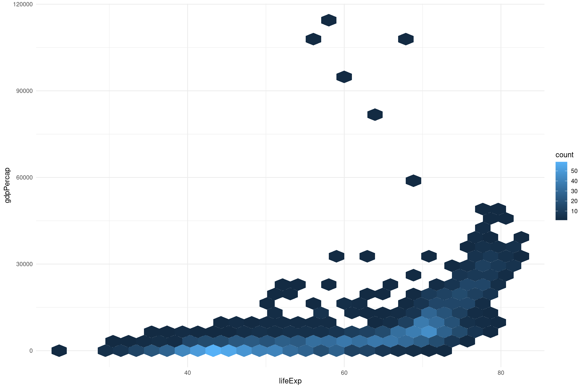
ggplot(gapminder, aes(lifeExp, gdpPercap)) +
geom_boxplot(mapping = aes(group = cut_width(lifeExp, 10))) +
scale_y_log10()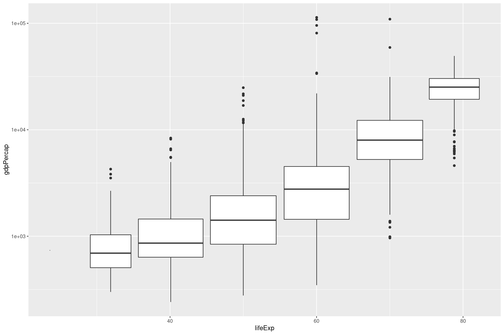
3.3 Ejercicios finales
3.3.1 Ejercicio exploración base nueva
Usando la base del paper Cancer Screening Risk Literacy of Physicians in Training, haz un primer análisis exploratorio que incluya:
- histogramas de todas las variables numéricas y no-numéricas
- scatterplots de la relación entre comprensión y numeracy, y entre comprensión y screenbeliefs
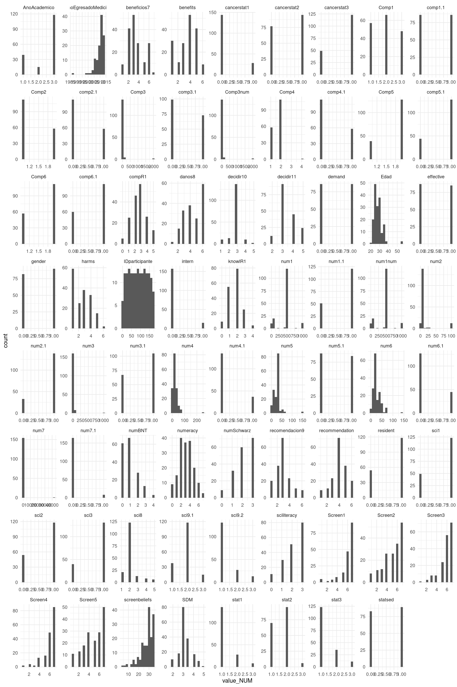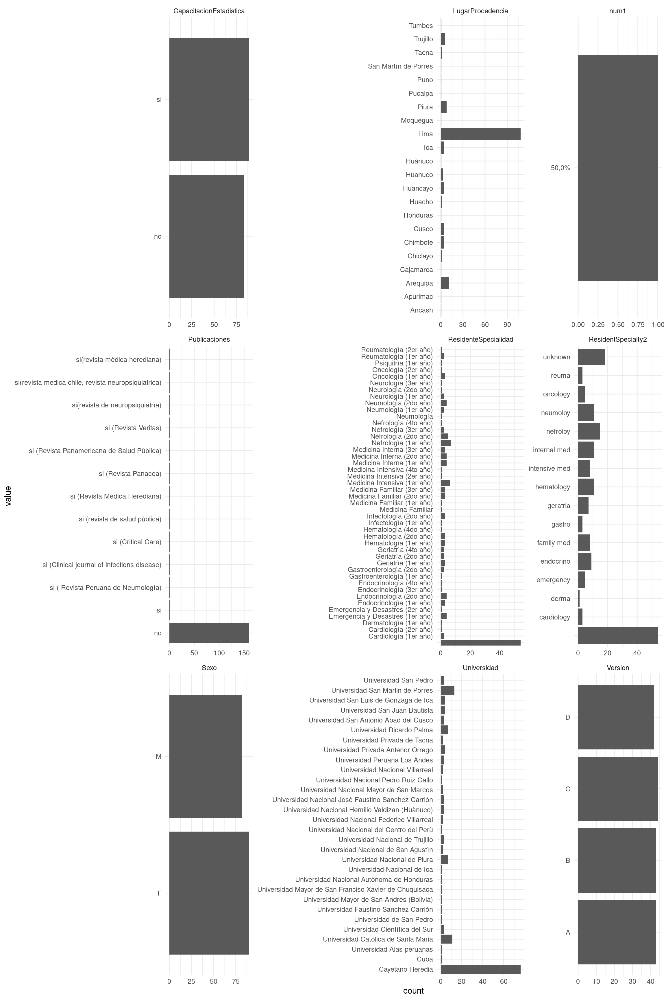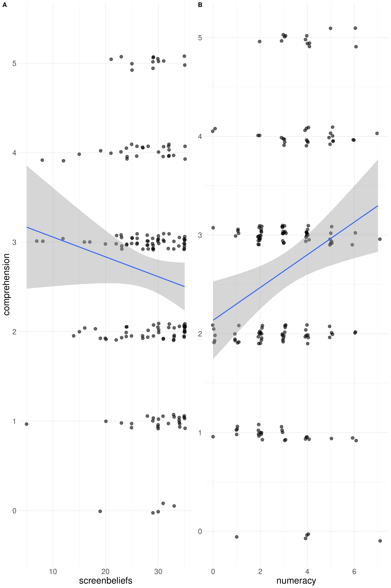
Bibliografía
Wickham, H., & Grolemund, G. (2016). R for data science: import, tidy, transform, visualize, and model data. O’Reilly Media, Inc. https://r4ds.had.co.nz/